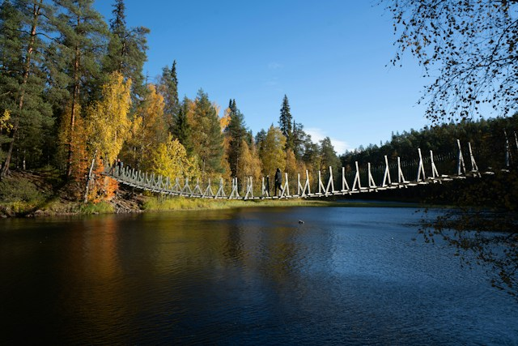

Pohjois-Pohjanmaan kansallispuistot

Neljä eri kansallispuistoa
Pohjois-Pohjanmaalla sijaitsee neljä kansallispuistoa:
- Oulangan kansallispuisto
- Syötteen kansallispuisto
- Rokuan kansallispuisto
- Hossan kansallispuisto
Tunnetuin näistä on Oulangan kansallispuisto.
Suosittuja reittejä Oulangan kansallispuistossa
Lataa dokumentti klikkaamalla alla olevaa linkkiä.
Word-dokumentti